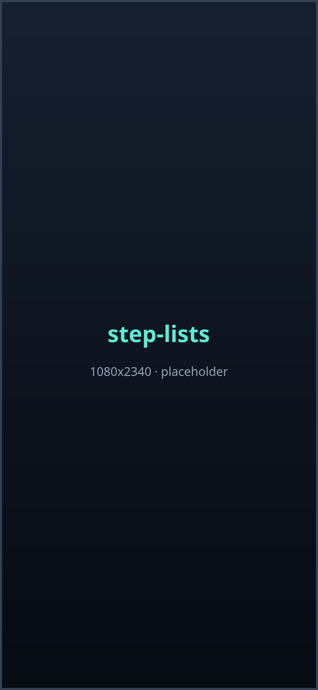
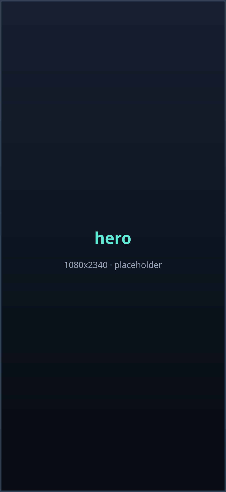
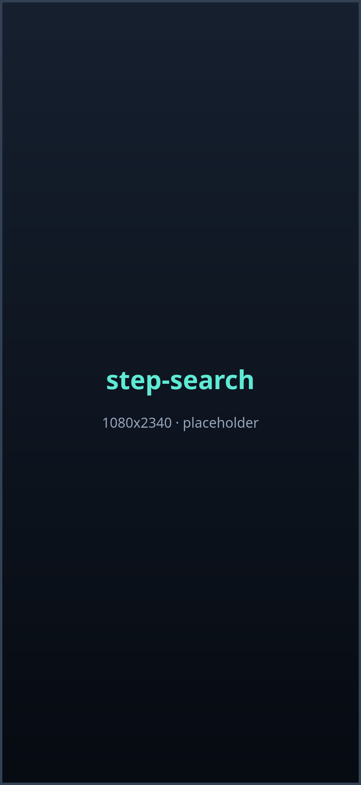
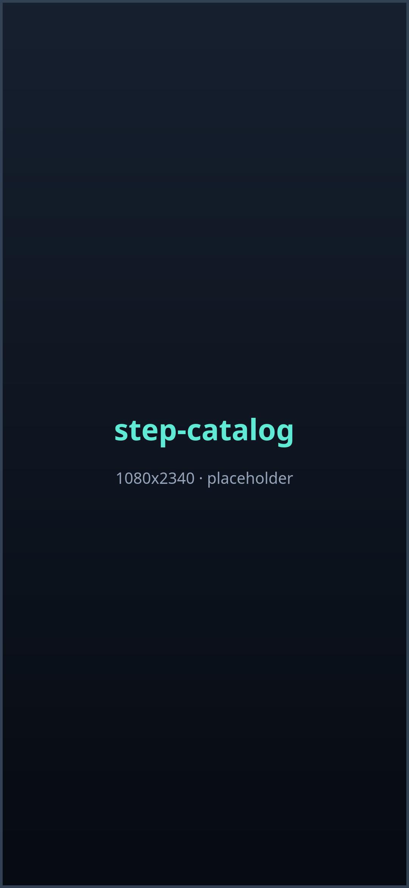
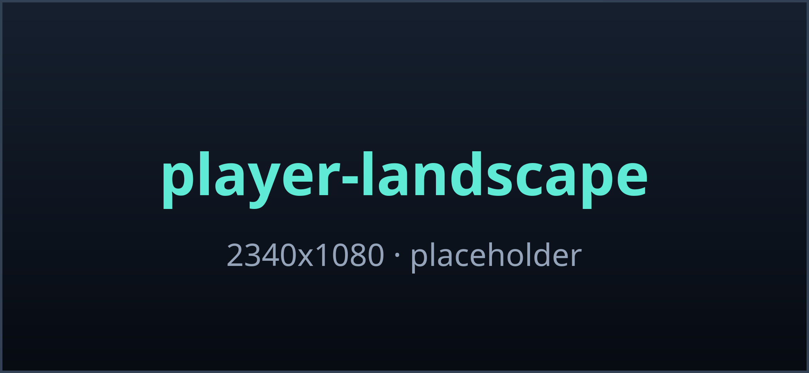

01
Tus listas, con nombre
Añade una o varias listas (URL M3U/M3U8 o servidor Xtream), ponles nombre y cambia entre ellas. Las credenciales se ocultan en pantalla y todo se guarda solo en tu móvil.

Android · Código abierto · GPL-3.0
Open IPTV es un reproductor IPTV pequeño y transparente. Pegas tu lista M3U o Xtream, buscas un canal y lo ves. Sin cuentas, sin anuncios, sin analíticas.

01
Añade una o varias listas (URL M3U/M3U8 o servidor Xtream), ponles nombre y cambia entre ellas. Las credenciales se ocultan en pantalla y todo se guarda solo en tu móvil.

02
Pestañas de Directo, Películas y Series, filtro por grupo y búsqueda que ignora tildes y mayúsculas: escribe «espana» y encuentra «ESPAÑA». Pensado para listas de decenas de miles de entradas.

03
Con un servidor Xtream, las películas y series se muestran en cuadrícula con su portada, ordenables y filtrables, y las series se abren por temporadas y episodios.


Horizontal e inmersiva, con salida explícita. Girar el móvil no corta la emisión.
«Suscripción caducada», «servidor no encontrado», «formato no soportado»… nunca un «error desconocido».
Guarda la última lista que funcionó. Si una actualización falla, conservas la anterior.
Favoritos por categoría y un botón para silenciar solo la app, sin tocar el volumen del móvil.
Gratis y sin registro. El APK está firmado con la clave del proyecto, así que las versiones nuevas se instalan encima sin perder tus listas.
Abre esta página en el móvil y pulsa Descargar APK.
Android te pedirá permiso para instalar desde el navegador. Acéptalo solo para este archivo.
Abre la app, añade la URL de tu proveedor y listo.
Cada versión publica el SHA-256 del APK en sus notas. Compáralo con:
sha256sum open-iptv.apkO compila tú mismo la app desde el código fuente.
Open IPTV es solo un reproductor. No incluye canales, listas ni proveedores, y no te ayudará a encontrarlos. Necesitas una lista que tengas derecho a usar. No está afiliada a ningún proveedor ni cadena.
La app no recoge ningún dato. Solo se conecta a las direcciones que tú le das: tu lista, los canales y sus logotipos. Tus listas y favoritos se guardan en tu móvil y en ningún otro sitio. Esta web no usa cookies ni analíticas.
Autor
Hice Open IPTV porque quería un reproductor que hiciera una cosa y la hiciera bien, sin cuentas ni publicidad, y que explicara qué pasa cuando algo falla. Es código abierto: puedes leerlo, compilarlo y mejorarlo.